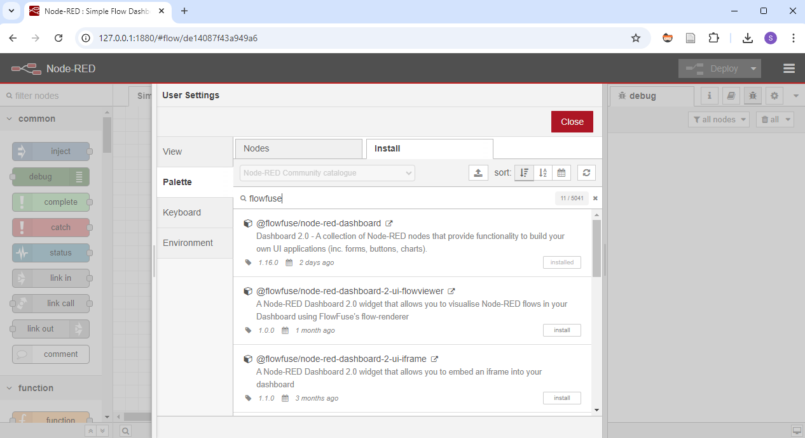
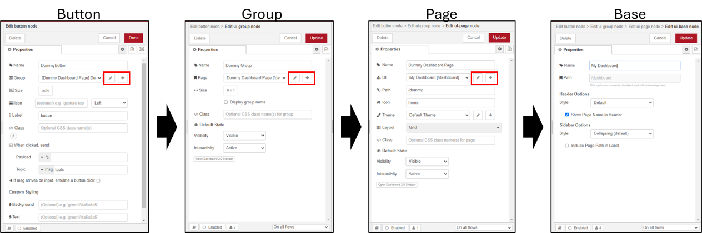
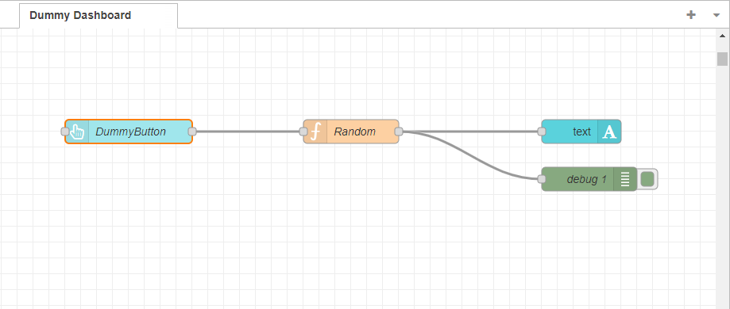
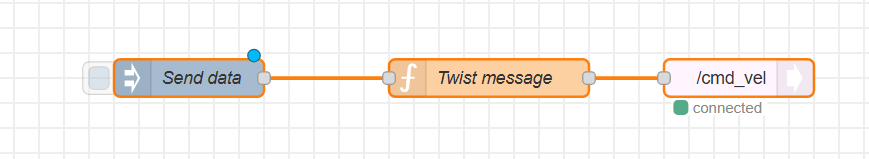
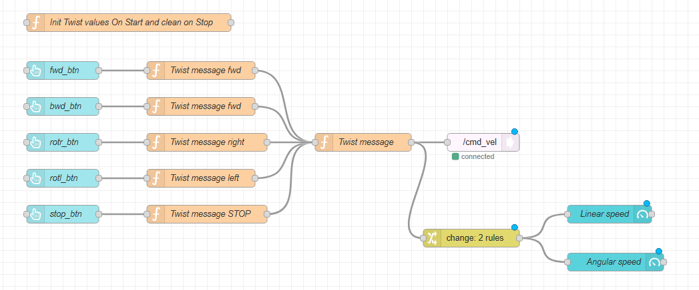
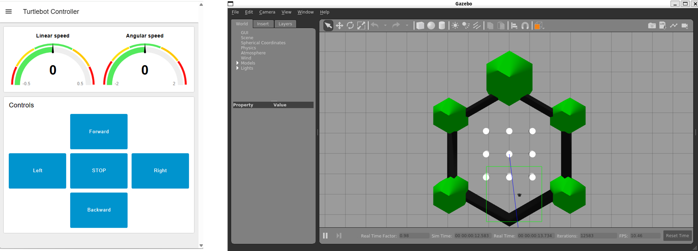
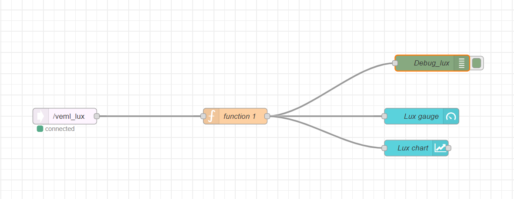
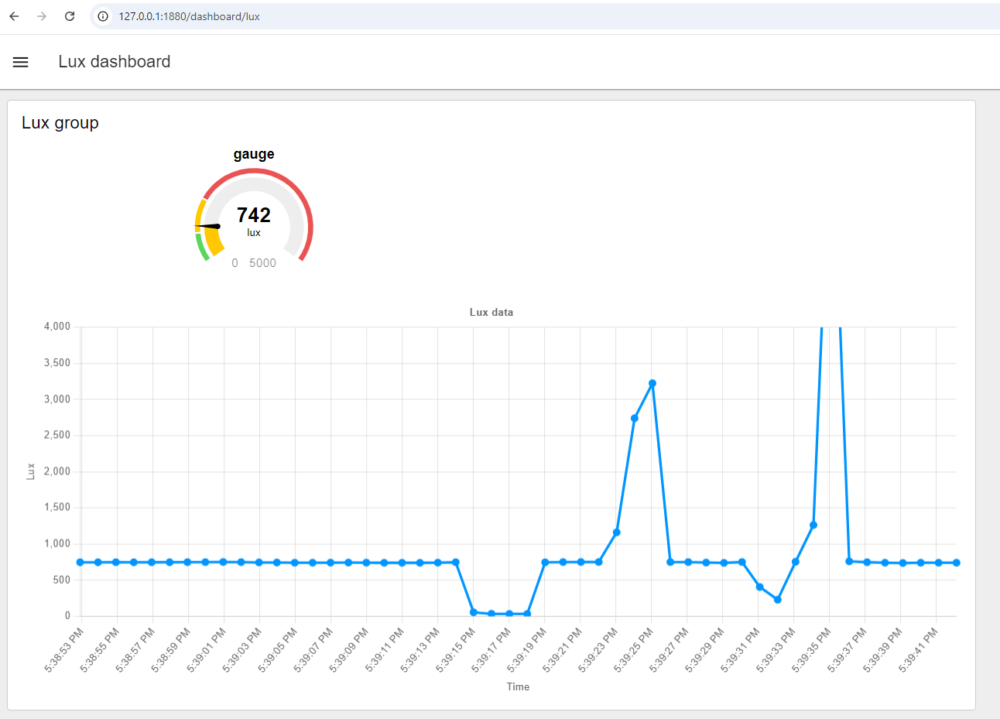

Introduction to Node-RED
Human-IST, ProtoFab, LearningLab, UniFR
ProtoFab assignment 6: Introduction to Node-RED
Introduction
This practical work focuses on learning the basics concepts of Node-RED
In this practical work, you will perform the following tasks:
Task 1 – Install Node-RED
Task 2 – A first Node-RED dashboard
Task 3 – A dashboard to control ROS your Turtlebot3 (simulation and real robot)
Task 4 – [OPTIONAL] A dashboard to monitor your Arduino luxmeter (remote)
Learning objectives:
At the end of the assignment, you should be able to
Know the basics of Node-RED IDE
Know how to program and deploy a dashboard
Know how to communicate with local ROS nodes
Pre-requisites
IDE for Arduino installed on your machine
Node-RED installed on your machine (Linux). See Task 1 for instructions.
- Windows - Please install it on your Linux WSL machine (where ROS is also installed)
[For the optional task] Notions seen in the assignment AN04
- The ESP32 circuit with the luxmeter (see AN_04)
Notions seen in the lecture LN06
Hints
When starting Node-RED, all flows are also started. This might create some problems when your flows are connecting to unavailable nodes; typically, when connecting to rosbridge or external servers. You can use the command below to start Node-RED without deploying flows.
$ node-red --safe
Tasks
Task 1 – Install Node-RED
Follow these instructions to install node-js on your system
For Windows (WSL Linux) Follow these instructions to install nvm, node.js, and npm on WSL2 Linux
Remark: You may install only the LTS version of node-js, to save some space on your system https://learn.microsoft.com/en-us/windows/dev-environment/javascript/nodejs-on-wslFor Native Linux (Ubuntu) Follow these instructions to install nvm, node.js, and npm on Ubuntu
Remark: You may install only the LTS version of node-js, to save some space on your system https://www.freecodecamp.org/news/how-to-install-node-js-on-ubuntu/
Then continue by installing Node-RED on your Ubuntu system. In a terminal, type the command below
Remark: You may potentially need to use ‘sudo’ before the command to install it as admin (was not needed in my case)$ npm install -g --unsafe-perm node-redYou may want to add Node-RED to your path permanently (to ensure you can run it from anywhere, even after a restart)
In a terminal, type the command below to get the {node-red_installation_path}
$ npm get prefixEdit your “.bashrc” file and add the line below at the end of your file. Note that you need to use your own {node-red_installation_path}
Remark: Pay attention, there is an extra “/bin” after the path!export PATH="{node-red_installation_path}/bin:$PATH"
Start Node-RED by typing “node-red” in your terminal
$ node-redOpen the Node-Red user interface on your browser using the following url: http://127.0.0.1:1880/
Note that to open the Dashboard(s) you created, you can use the url http://127.0.0.1:1880/dashboard
For Linux (Ubuntu) – [Not tested]
Follow these instructions to install node-js on Ubuntu
Remark: You can install only the LTS version of node-js, to save some space on your systemThen install Node-RED on Ubuntu. In a terminal, type the command below
Remark: You may potentially need to use ‘sudo’ before the command to install it as admin$ npm install -g --unsafe-perm node-redYou may potentially need to add Node-RED to your path (to ensure you can run it from anywhere and in new Terminals)
In a terminal, type the command below to get the {node-red_installation_path}
$ npm get prefix
Edit your “.bashrc file” and add the line below at the end of your file. You need to use your own {node-red_installation_path}
Remark: Pay attention, there is an extra “/bin” after the path!export PATH="{node-red_installation_path}/bin:$PATH"
Start Node-RED by typing “node-red” in a terminal
$ node-redNow open the Node-Red UI on your browser using the following url: http://127.0.0.1:1880/
You should be able to see the Node-RED Ui and interact with it. Note that you will be able to open the dashboards created using the following url: http://127.0.0.1:1880/dashboard
Finally, install the ROS bridge server on your machine. This bridgle allows to connect Node-RED and ROS together. We will need it for the Task 2 of this assignment (Task 2)
To install rosbridge, in a terminal type
$ sudo apt install ros-noetic-rosbridge-serverYou should now be able to start it using this command in a terminal
$ roslaunch rosbridge_server rosbridge_websocket.launch
Task 2: A first Node-RED dashboard
As a first task, we will ensure everything is working as expected by starting node-red and creating a dummy dashboard. This dashboard will just consist in a button, an output text field and a small function to generate a random number. When clicking on the button, a new random number is generated and displayed on the text field.
Let’s do the task step by step:
Ensure Node-RED was successfully installed. Start Node-RED and open its UI in your browser
Remark: We recommend using specific flow files for each project (below we specify a flow file name).$ node-red dashboard_flows.jsonInstall dashboard 2.0 palette
From the web interface, click on the menu button (the 3 horizontal lines on the top-right corner)
Select “manage palette”.
Select the “install” tab and search for flowfuse (see image below). Install it.

Create a new flow tab and rename it (i.e. “Dummy Dashboard”)
Hint: to rename it, you can double-click on its name on the top of the user interface.Add a “button” node to your new flow
Drag and drop a “button” node from the “dashboard 2” palette (left of user interface)
Configure the button and the UI (double-click on the newly created button node)
You need add and configure the different parts of your UI (see figure below)
To enter the configuration of a sub-layout, click on the edit button of the current layout (see red rectangles on the figure below)
Remark: The button is embedded in a group-ui, which is embedded in a page-ui, which is embedded in the base-ui (as illustrated in the figure below).For now, you can just set a name for the different parts of your UI and keep the default values for other parameters. I still advise to have a look at the different layout options to get a sense of what can be done.

Add a “text” node to your flow to display the value
Drag and drop the “text” node to your flow from the dashboard 2 palette
Configure the “text node (UI) (double-click on the text node)
Set the name to your “text” component and set its Label content.
Add it to the same group, page and base UI as the previous “button” node
Add a “function” node to your flow
Drag and drop the “function” node to your flow from the function palette
Edit the node to generate a random number between 0-100 (double-click on the node)
You can see the javascript code below
msg.payload = Math.round(Math.random()*100); return msg;
Connect the output of the “button” node to the input of the “function” node and connect the output of the “function” node to the input of the “text” node
Remark: You can see the final expected flow on the picture below (Note: an extra “debug” node has been added).Deploy your flow (using the button on the top-right of the UI) and open the dashboard in your browser using the address: http://127.0.0.1:1880/dashboard/
- In your brwoser, on the left of your dashboard webpage, you can see the different pages available. Open your newly created page and test your UI.

A few suggestions to go further:
Play with the different settings and layouts for the UI nodes
Also display the value using a gauge node
Display the last 20 values received on a chart
Task 3 - A dashboard to control your Turtlebot3 (simulation)
As a second task, we will connect to a ROS topic and send commands to control the simulation of the turtlebot3 robot. The controller user interface (developed with Node-RED) will send commands to the right ROS topic. We will first develop a basic flow to test the features and then you will develop the graphical interfcae to send commands to the turtlebot3. IT should be able to move forward (up), backward (down), rotate right (right), rotate left (left) and halt (stop).
Let’s do the task step by step.
Let’s start with a basic flow:
Start node-red with a new flow-file, specific for ROS
Remark: If you have all your flows in the same file, you might have problems when starting node-red: nodes connecting to ros bridge (i.e. pub and sub nodes) will yield problems when not being able to reach/connect to ROS server. In such case, just start roscore and rosbridge to let node-red start correctly.$ node-red ros_flows.jsonCreate a new flow and rename it.
Now add an inject node, a function node and a ros pub node; connect them sequentially (see image below).

Overview of a basic flow that sends Twist data to the robot For the “Send data” inject node, you can keep its default settings. When you click on the little grey square on its left, it will trigger the function connected to its right.
For the “Twist message” function node, modify its “On Message” function looks like the code below. It creates a Twist message with a linar and angular values of 0. The payload of a JSON formatted message.
var sent_lin_x = 0 var sent_ang_z = 0 msg.payload = { linear: { x: sent_lin_x, y: 0, z: 0 }, angular: { x: 0, y: 0, z: sent_ang_z } }; return msg;For the “/cmd_vel” ROS pub node, set the Datatype package to “geometry_msgs” and the Datatype to “Twist” (you must have ROS installed on your machine to be able to select those). Normally, the other the settings can be kept to default (ROS server: ws://0.0.0.0:9090 and ROS topic: /cmd_vel).

Configuring the IP of your ROS server within Node-RED. - Deploy your flow.
We will now test the flow
On a terminal, start roscore and rosbridge. (Remember: roslauch automatically starts roscore if not already running).
$ roslaunch rosbridge_server rosbridge_websocket.launchOn another terminal, start the gazebo simulation for your robot:
$ roslaunch turtlebot3_gazebo turtlebot3_world.launchNow go back to your Node-RED flow UI, modify the linear (ie. 0.1) or angular (ie. 0.3) values of your Twist function, redeploy and finally click on the small grey rectangle on the left of your inject node to issue the command. You should now see the robot move in the simulation window.
Close the simulation (Note: you may want to keep roscore and rosbridge running …)
Now let’s develop a basic user interface to control the simulated robot.
- In our proposed flow, we use “flow variables” (similar to the concept of global variable, accessible within your flow) to modify the linear and angular speed. The chosen approach will simplify the transition to the real robot for the end of the task. However, numerous other approaches could be developed. You can see the complete proposed flow on the image below (with some optional gauge visualisations …).

Create 5 buttons for your user interface (forward, left, stop, right, backward)
For each button, open its settings and modify its name, label and add it to the same group-ui. For the first button, you may need to create this group-ui as well as the page-ui the page; give them a name.
You will need to play with the layouts to have your buttons displayed correctly, do not spend too much time on aesthetics for now. You can do that later.
If desired, you can already deploy your flow to have a look at your interface (clikc on the Deploy button on the top-right of your interface and open this url http://127.0.0.1:1880/dashboard).
Create a function to initialize and clean your flow variables
On the “On Start” and “On Stop” panels of your function, write the code provided below to initialise your variable to 0.
flow.set("lin_x", 0) flow.set("ang_z", 0)
Create functions for each of your buttons. Here we created 5 functions, but you could as well create a single function and do a specific operation according to the button pressed.
In each function, in its “On Message” panel, adapt the value of your flow variables (increase or decrease). Below is an example for the “Twist Message fwd” function. It gets the value of the flow variable
var linx = flow.get("lin_x") flow.set("lin_x", linx + 0.05); return msg;
Connect the output of these functions to the “Twist Message” function.
Modify the “Twist message” function
- Modify the “On Message” code so that it reads the value of the flow variables before creating the Twist JSON object.
Connect your Twist message to a “/cmd_vel” ROS pub node (you may reuse the one your used for the initial test).
Start roscore and rosbridge (if not already running)
(if not already running) On a terminal, start roscore and rosbridge. (Remember: roslauch automatically starts roscore if not already running).
$ roslaunch rosbridge_server rosbridge_websocket.launch
On Node-red, start the interface page. The interface should look somewhat similar to the one shown on the figure below. Note that on the interface shown below, we worked on the design to display the buttons nicely and also on two gauges to display current linear and angular speeds. You can optionnally work on that too.
Deploy your flow
Open your dashboard (http://127.0.0.1:1880/dashboard)
Test your developed controller to control the simulated Turtlebot3. You should be able to see the controller and the
On a terminal, start the gazebo simulation for your robot:
$ roslaunch turtlebot3_gazebo turtlebot3_world.launchPress the button and see your simulated robot move.
Once finished, close the simulation.

Let’s modify the code to control the real robot.
In simulation mode, the robot moves upon reception of a single command. The real robot requires to repeatedly receive commands to keep moving. You can test that using the current flow; the real robot will only move briefly upon every button press.
Add an inject node to your flow.
- Configure it to send a message every 0.1 second.
Connect this inject node to the input of your “Twist message” function.
Deploy your flow. Test in simulation (it should still work as before).
Modify .bashrc to use the real robot
Comment the two lines that export the values for the simulation
Uncomment the two lines that export the values for the real robot
Restart (or start) roscore and rosbridge
Prepare the Real Robot
Make sure the real robot is in a safe spot
Connect to the robot using ssh, update its bashrc, source it and then connect the robot to your roscore using the command below.
$ roslaunch turtlebot3_bringup turtlebot3_robot.launch
Test your user interface to make the real robot move.
A few suggestions to go further:
Improve the interface so that it looks more pretty
Collect some data from the robot (subscribing to its topics) and display them on your interface (ie. the battery)
[OPTIONAL] Task 4 - A dashboard to monitor your Arduino luxmeter (remote)
In this third task, we will connect Arduino, ROS and Node-RED. The Arduino will transmit its LUX data over WiFi using a ROS node (see optional Task 4 of Assignment 4). On your computer, the messages will be received by “ROS” and made available on the topic “veml_lux” (according to code provided below). Node-Red will read the data received on this topic and display it on a dashboard using a gauge and a chart.
Let’s start step by step.
Let’s begin with the Arduino part.
Upload the sketch provided (see code below) to send LUX data over WiFi with your ESP32.
Be sure to update ssid and password information if you are not using LearningLab’s network.
Check that the server IPAddress is correct (See assignment 4, Task 4 for the details).
In the sketch, have a quick look on how the lux value is sent (how the variable is handled).
Ensure the Arduino starts correctly
Let’s continue with the Node-Red part
Create a new flow
Add a ros_sub node and configure it to listen on your topic (“veml_lux”)
Add a gauge node from the “Dashboard 2” Palette and configure it
Connect the output of your ros_sub node to the input of your gauge node
Add a chart node from the “Dashboard 2” Palette and configure it
Connect the output of your ros_sub node to the input of your chart node

Let’s continue with the ROS part
We now need to start the ROS bridge server and serial connections to make the link Node-RED <-> ROS <-> Arduino
Start ROS bridge to enable the connection between Node-RED and ROS
$ roslaunch rosbridge_server rosbridge_websocket.launchInstall ROS serial if you did not do it previously
$ sudo apt-get install ros-noetic-rosserialStart ROS serial to enable the connection between your Arduino and ROS
$ rosrun rosserial_python serial_node.py tcp 11411
Windows: Ensure you have firewall disabled.
Now let’s start everything together
Start the Arduino with the right sketch (ensure ssid, password and server ip are correct)
Deploy your flow and open your dashboard. Your dashboard should look similar to the figure below.

A few suggestions to go further:
Play with the different settings and layouts for the UI nodes
Trigger some action on the LEDS of the Arduino using Node-RED and ROS
Use the Lux value to control the robot (speed or direction)
Arduino code:
#define ROSSERIAL_ARDUINO_TCP // Very important!
#include "Adafruit_VEML7700.h"
#include "WiFi.h"
#include <ros.h>
#include <std_msgs/Float32.h>
const char *ssid = "ProFab";
const char *password = "1700_UniFR.&";
Adafruit_VEML7700 veml = Adafruit_VEML7700();
IPAddress server(192, 168, 1, 2); // ip of your ROS machine (For Windows without Mirorring enabled, the IP of Windows and you need to have port forwarding to redirect to your WSL2 linux. If you have WSL Network Mirroring enabled, it is not necessary to set up port forwarding. See Assignment 4, Task 4 for more details)
ros::NodeHandle nh; // the node handler
std_msgs::Float32 output_val; // the type of message that will be sent
ros::Publisher pub("veml_lux", &output_val); // The publisher method; the first parameter corresponds to the name of topic on which to publish and the second the type of data
void setup()
{
Serial.begin(115200);
Serial.println();
Serial.print("Connecting to ");
Serial.println(ssid);
// Connect to WiFi
WiFi.begin(ssid, password);
while (WiFi.status() != WL_CONNECTED) // -> wifi delay -> a must -> other wise it will restart continuously
{ delay(500);
Serial.print(".");
}
Serial.println("WiFi connected - IP address: ");
Serial.println(WiFi.localIP());
// Setup VEML
if (!veml.begin()) {
Serial.println("VEML Sensor not found");
while (1);
}
Serial.println("VEML Sensor found");
// Setup connection to ROS machine (server)
nh.getHardware()->setConnection(server, 11411);
nh.initNode();
nh.advertise(pub); // the topic must be advertised to the master
}
void loop(){
//Send the value every second
float veml_val = veml.readLux();
output_val.data = veml_val;
Serial.print("lux: "); Serial.println(veml_val); // for debug purposes
pub.publish(&output_val); // publish the value on the topic
nh.spinOnce(); // Required, otherwise topic not detected by ROS !
delay(1000);
}Ressources
Node-RED Documentation - https://nodered.org/docs/
Node-RED Cookbook - https://cookbook.nodered.org/
Dashboard 2.0 Documentation - https://dashboard.flowfuse.com/getting-started.html
Dashboard 2.0 Overview (Youtube) - https://www.youtube.com/watch?v=0Hhns_DcyKQ